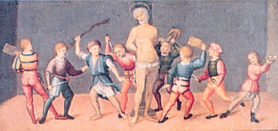
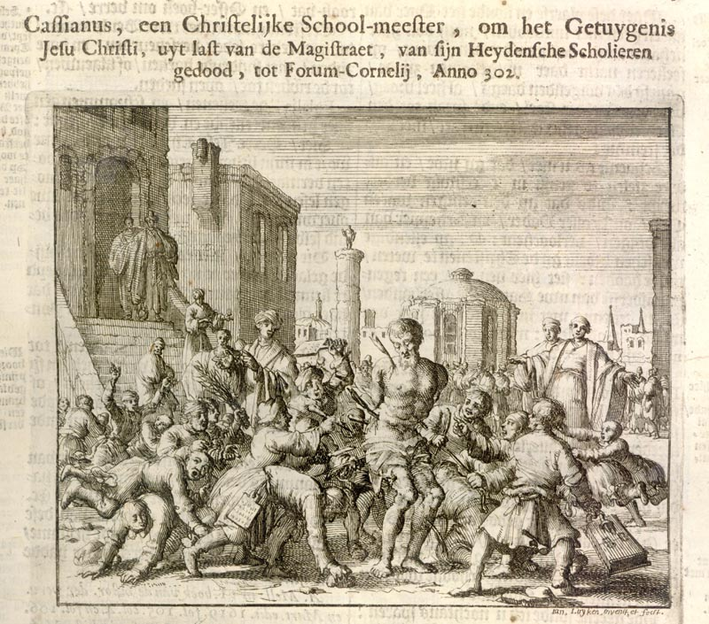

International
InternationalHymn na cześć Kasjana
2011-07-06 | autor: flamenco108
Święty chrześcijaństwa, Kasjan z Imoli był biegłym tachygrafem i nauczycielem tej sztuki. Jak to można zobaczyć na ilustracji, w roku 304 n.e. został zabity przez swoich uczniów przy pomocy stylusów, czyli rylców do tabliczek woskowych - tabletów, na których wówczas notowano. A dlaczego to został tak niecnie zabity? A podobno dlatego, że był bardzo surowy i zbyt wiele (w każdym razie ich zdaniem) wymagał od uczniów.

Nie bez powodu. Rozwijające się już od bez mała 400 lat noty tyrońskie przełamały barierę, jaką im postawił Seneka Młodszy i obrosły w kolejne 10 tysięcy znaczników, w ten sposób licząc już ich ponad 13 tysięcy (liczbowo: 13000). Stanowiły one ogrom materiału, który trzeba było w rozsądnym czasie przyswoić bez wyrafinowanych pomocy naukowych dostępnych współcześnie, bez metodologii nauczania, raczej zwyczajnie - pamięciowo. Tylko maksymalnym wysiłkiem można było osiągnąć cel.
Widocznie uczniowie Kasjana do orłów nie należeli, skoro wybrali rozwiązanie, które, jak dziś wiadomo, niczego nie rozwiązuje: pozbyli się nauczyciela, zamiast zdać egzamin - by mieć święty spokój.
Aureliusz Prudencjusz Klemens napisał taki oto hymn, odszukany w zbiorze jego twórczości w tłumaczeniu ks. dr A. Kanteckiego przez byłego stenografa parlamentarnego i pasjonata-stenologa Tadeusza Zglińskiego:
Był przełożony szkoły - i licznym orszakiem
Młodzieży otoczony, w naukach ją ćwiczył,
Każdy wyraz potrafił w krótkie ująć znaki,
Za najbieglejszym nawet zdążył pisać mówcą -
Ostre niekiedy słowa i smutne wypadki
W niedorostkach budziły nienawiść i trwogę…
Zdarto z niego odzienie, związano mu ręce,
I wydano w moc chłopców, w ostre zbrojnych rylce.
Ile każdy tajonym nienawiści gniewiem
Płonął, tyle go wylał folgując swej złości,
Jedni mu w twarz dredniane rzucają tablice -
A trzeszczące deszczułki uderzywszy w czoło
Rozpryskują się w sztuki, część ukwiła w licach…
Drudzy miotają rylce z ostrego żelaza,
(którymi wiersz po wierszu na wosku się pisze
A napisane znaki wygładziwszy składnie
Z popisanej powierzchni znów równą się czyni)
(…)
“Precz jęczysz, Profesorze - (jeden z chłopców woła)
Wszakże sam tym żelazem dłoń nam uzbroiłeś?!
Otoć dziś oddajemy tych znaków tysiące,
Których się niegdyś we łzach uczylim od Ciebie!
Nie masz się o co gniewać, boś sam nakazywał,
Byśmy bez przerwy w ręku ostre mieli rylce!
Nie prosimy o wolną rekreacji chwilę,
Którejś nam, skąpiąc zawsze, tylekroć odmawiał!
Tak urągali chłopcy dręcząc mistrza ciało,
A on żył mimo długiej i straszliwej kaźni.
Wreszcie się nad nim Chrystus niebieski zlitował,
I kazał porozrywać związki duszy z ciałem.
(…)
2011-07-06 autor: flamenco108